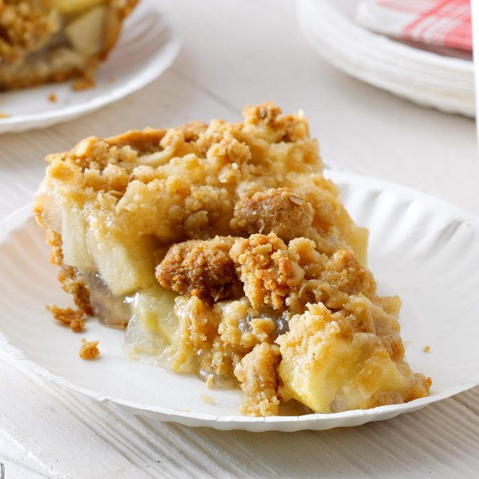

Dutch Apple Pie

Dutch Apple Pie
The difference between classic apple pie and a Dutch apple pie recipe is all in
the delicious crumb topping. Dutch apple pie topping is made with butter, Gold
Medal™ flour, brown sugar and granulated sugar, and you'll know when it's
ready to come out of the oven when the crumb toppings are a deep golden
brown. Instead of a second pie crust, enjoy a generous blanket of sweet streusel
crumbs–sprinkled over a tender spiced apple filling.
Ingredients
Crust
- 1 cup Gold Medal all-purpose flour
- 1/2 teaspoon salt
- 1/3 cup plus 1 tablespoon shortening
- 2 to 3 tablespoons cold water
Filling
- 8 cups sliced cored peeled apples
- 1/2 cup granulated sugar
- 1/4 cup Gold Medal all-purpose flour
- 1/4 teaspoon ground cinnamon
- 1 tablespoon lemon juice
Topping
- 1/2 cup unsalted butter, softened
- 1 cup Gold Medal all-purpose flour
- 2/3 cup packed brown sugar
- 1 tablespoon granulated sugar
Instructions
- In medium bowl, mix 1 cup flour and the salt. Cut in shortening, using pastry blender (or
pulling 2 table knives through ingredients in opposite directions), until particles are size
of small peas. Sprinkle with cold water, 1 tablespoon at a time, tossing with fork until all
flour is moistened and pastry almost leaves side of bowl (1 to 2 teaspoons more water
can be added if necessary). Gather pastry into a ball. Shape into flattened round on
lightly floured surface. Wrap flattened round of pastry in plastic wrap, and refrigerate
about 45 minutes or until dough is firm and cold, yet pliable. This allows the shortening
to become slightly firm, which helps make the baked pastry more flaky. If refrigerated
longer, let pastry soften slightly before rolling.
- Heat oven to 400°F. On surface sprinkled with flour, using floured rolling pin, roll pastry
dough into circle 2 inches larger than 9-inch pie plate. Fold pastry into fourths; place in
pie plate. Unfold and ease into plate, pressing firmly against bottom and side and being
careful not to stretch pastry, which will cause it to shrink when baked. Trim overhanging
edge of pastry 1 inch from rim of pie plate. Fold and roll pastry under, even with plate;
flute as desired.
- In large bowl, toss Filling ingredients. Pour into pie plate, mounding apples toward
center.
- In medium bowl, use pastry blender or fingers to mix butter, 1 cup flour and the brown
sugar until a crumb forms. Sprinkle evenly over top of pie. Sprinkle 1 tablespoon
granulated sugar on top.
- Bake 45 to 55 minutes or until pie crust and crumb topping are deep golden brown and
filling begins to bubble. Transfer to cooling rack to cool.
Return to Main page